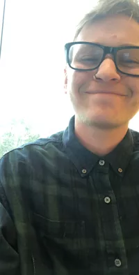
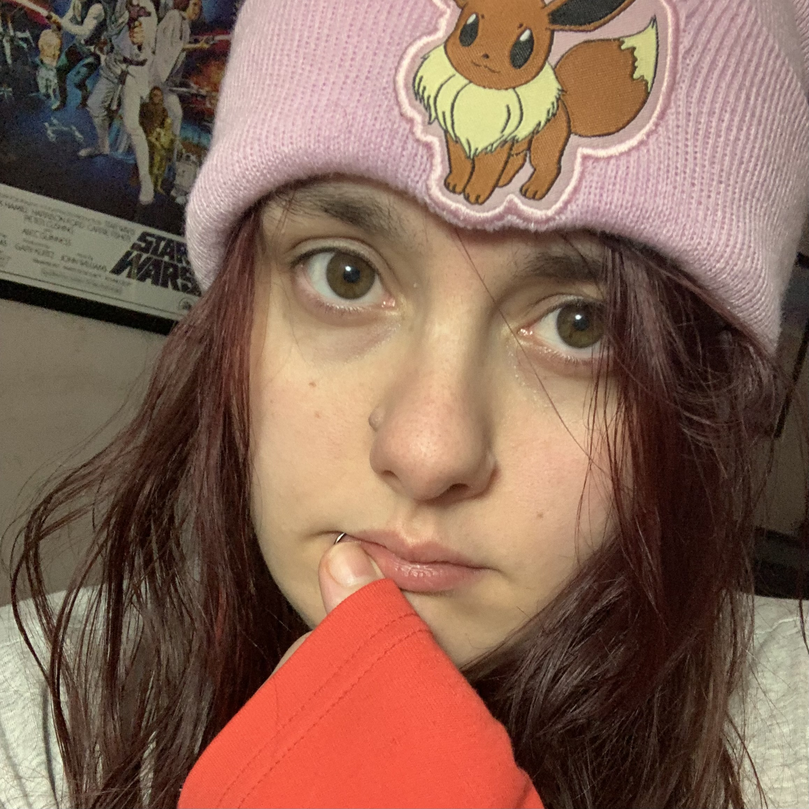
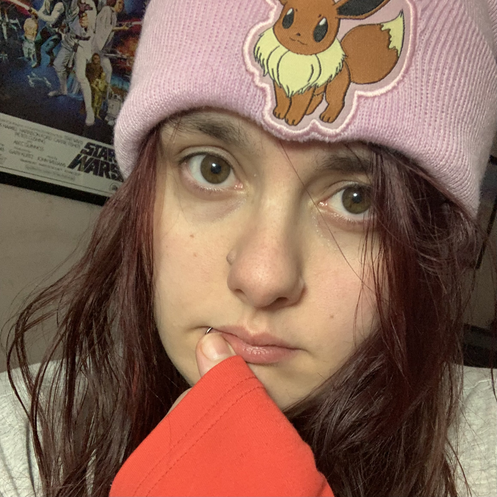

Team Traqstarz
s3941659
I'm 26 years old and I'm from central NSW in
Wagga Wagga. I completed my senior years of high
school in 2013 and took part in a Bachelor of Medical
Radiation Science; however, unfortunately, I decided
not to continue due to personal circumstances. My
career has been in management at Coles, and now I have
decided to pursue a new career path by studying IT
through RMIT. Interests outside of my professional
life include snowboarding in the winter and racing
superbikes in the summer. My interests also include
tuning and modifying high-powered vehicles, observing
stars and space, and building and experimenting with
computers, software, and various technologies. So far,
my IT experience in life has been the inclusivity and
teaching from my father in my childhood. I am
interested in the backend field of IT and how
computers work at their core.
Blayne Website
Blayne Website
s3955557
I’m 37 years old and live in Sydney. I have obtained
experience in Finance & Investments and corporate
sales throughout my career, and I have worked in
several technology startups in various capacities. I’m
fluent in English and Turkish and was born and raised
in Sydney, where I currently reside. I have had the
pleasure of working in London and have travelled to
dozens of locations worldwide. I have a keen interest
in fitness, enjoy training in Brazilian Jiu-Jitsu, and
have recently completed a marathon. My passion for IT
began at the ripe age of about six years old when I
first discovered computer games and was forced to
learn my way around MS-DOS and the command line so
that I could install and play my favourite games on my
home PC. Since then, much of my time has been spent
playing with computers through the early periods of
the internet entering homes, the invention of online
chat and social media, the evolution of gaming
consoles, and the introduction of smartphones.
Burak Website
Burak Website
s3941830
I’m a 28-year-old rural kid that moved to the big city
(Melbourne) about 6-7 years ago. I finished year 11 in
high school (much regret) and haven’t studied since
then (going on 11 years now). I was raised in the
country, not surrounded by technology but what I did
have, definitely sucked me in. I’ve been an avid gamer
since I was a child; I was raised on a PlayStation 1,
and since then, I’ve levelled up and scored myself a
switch and am finally in the world of Zelda and Mario
games. Using consoles and computers has been a regular
thing for me and still is today. My experience is
limited, but I've gotten into figuring out how
things work with the ‘tools’ I had/have. My experience
at work didn’t surround many IT-related things,
although I have learned how to use certain systems and
applications to get jobs done.
Charlie
Website

s3954482
I’m 21 years old, and I live in Sydney. I moved to Australia when I was 14 from Iran and am very grateful to have created a new life in Australia. One of my favourite things to do is working out and feeling strong! The gym is my favourite place as I can take my mind off things and focus on myself. I also like to paint now and then, even though I might not be the best painter. My main interest in IT comes from my mother. She has her Masters in IT, and ever since I was little, new Technology has always surrounded me. When she was learning how to code, I would just sit behind and be so fascinated by how everything works behind the scenes. IT is such a male-dominated field, so it’s very encouraging to see strong women in this field! I’m also an IT recruiter, so to be able to understand what I’m going to recruit for is a benefit.
Helia Website
I’m 21 years old, and I live in Sydney. I moved to Australia when I was 14 from Iran and am very grateful to have created a new life in Australia. One of my favourite things to do is working out and feeling strong! The gym is my favourite place as I can take my mind off things and focus on myself. I also like to paint now and then, even though I might not be the best painter. My main interest in IT comes from my mother. She has her Masters in IT, and ever since I was little, new Technology has always surrounded me. When she was learning how to code, I would just sit behind and be so fascinated by how everything works behind the scenes. IT is such a male-dominated field, so it’s very encouraging to see strong women in this field! I’m also an IT recruiter, so to be able to understand what I’m going to recruit for is a benefit.
Helia Website
s3941659
I am 25 years of age and currently live in Toowoomba,
QLD. I have completed Year 12 and hold a Certificate
III in Media. My interests in IT vary in all corners
of the field. Growing up in the early 2000’s parallel
to the technological boom, has just been second nature
to me. I have not known anything entirely different
and have always kept up to date with the latest
trends. From an early age, disassembling machines and
figuring out how to put them back together has
directed my interest in learning how things work and
how they were created. This proceeded into wanting to
learn more and more, not just about hardware, but the
software and the impact IT has on the world. Most of
my IT experience is self-taught – spending hours on
end tinkering, watching YouTube, or browsing through
forums which I would also consider to be some of my
hobbies.
Jake Website
Jake Website
s3954055
I’m 28 years old, and I live in Bendigo. My high
school days are nothing to reflect on, as I struggled
with mental health and did not apply myself well. I
regret this, and I am trying hard to start over with
what I want to do with my life. My hobbies include
video games, reading, and drawing. My favourite game
is Destiny 2. I’ve spent many hours playing it and
have met some amazing people. My interest in IT comes
from my grandfather, who not only gifted me my first
computer but taught me as much as I was willing to
learn about computers. I’m very thankful for this. My
experience comes from self-taught things, such as
learning to code and learning how to build my
computer. I only have one previous work experience,
which was volunteering. I was transferring paper data
to be digital. It was enjoyable and sparked my
interest in data administration due to needing to
focus and utilise logical thinking.
Michelle Website 
Michelle Website 